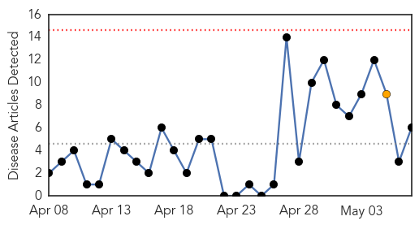
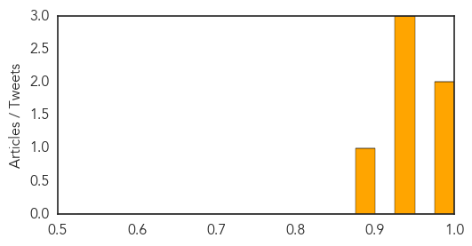

Cholera
30-Day Web Trend
0 alerts, 1 warnings

30-Day Twitter Trend
0 alerts, 0 warnings

Article Locations

Article Confidences
Top Articles:
- 0.997
- UN struggles to stem new rise in Haiti cholera cases
- 0.989
- Caution, containment and continued care
- 0.949
- Health staff join hands in the war on cholera - Kenya
- 0.939
- Kenya: Health staff join hands in the war on cholera
- 0.927
- Sierra Leone News: Poor hygiene responsible for disease burden-Dr. Brima Kargbo « Awoko Newspaper
- 0.887
- Cuba’s Effective and Cheap Cholera Vaccine
Top Tweets:
-
No tweets found for May 07, 2015
Influenza
30-Day Web Trend
1 alerts, 0 warnings

30-Day Twitter Trend
3 alerts, 0 warnings

Article Locations

Article Confidences

Top Articles:
- 0.998
- How the Midwest's massive bird flu outbreak could threaten humans
- 0.969
- Massive Impact, Uncertain Future – Phenomena
- 0.961
- Bird flu in Minnesota's poultry farms: Why you should care
- 0.960
- Despite U.S. efforts, bird flu thought to spread between farms
- 0.892
- Poultry industry receives some good news on bird flu
- 0.888
- Dog Flu Questions Answered
- 0.751
- May 7, 2015 Archives
- 0.751
- May 7, 2015 Archives
- 0.751
- May 6, 2015 Archives
- 0.751
- May 6, 2015 Archives
- 0.751
- May 6, 2015 Archives
- 0.751
- May 6, 2015 Archives
- 0.751
- May 6, 2015 Archives
- 0.751
- May 6, 2015 Archives
- 0.687
- Help! Bird flu deaths overwhelming disposal
- 0.686
- HA gets ready for Southern Hemisphere Influenza Vaccination Programme
- 0.616
- Pneumococcal vaccine cuts hospitalisations by 70 percent
- 0.568
- Iowa using incinerators to cope with 20 mn casualties of avian flu — RT USA
Top Tweets:
-
No tweets found for May 07, 2015